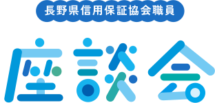

それぞれの色を持った職員が、年齢、性別、キャリアの垣根を超えて、
協会で働く日々について語り合いました！

浦野 章博8年目
総務部
企画情報課
総務部
企画情報課
中島 菜々子1年目
松本営業部
業務第1課
松本営業部
業務第1課
本田 朋樹2年目
松本営業部
業務第2課
松本営業部
業務第2課
一ノ瀬 美波14年目
本店営業部
業務第2課
本店営業部
業務第2課
石坂 友弥16年目
業務統括部
業務課
業務統括部
業務課
MEMBER
松本営業部業務第1課
松本営業部業務第2課
総務部企画情報課
本店営業部業務第2課
業務統括部業務課
協会を選んだ理由はなんですか？
中島 - 最初はなんとなく、かたいイメージだったんです。でもインターンシップの際、職員の雰囲気が和やかで皆仲がいいのを見て、ここなら馴染めそうだと感じたのが決め手でした。
本田 - 私は、金融関連で企業支援に携われる仕事を探していて。業務内容が、自分のしたいことと一番合致していると感じたのが協会でした。説明会を経て、実際にここで働くイメージを持てたことも大きかったです。
浦野 - 自分も中島さんと同じく金融業志望だったのですが、当時、金融業はノルマが厳しいイメージがあったんです。数字に追われてしまったら、本当にお客様のための仕事ができないのではないかと思っていたとき、協会の存在を知りました。「公的な保証人」という立場である協会でなら、お客様第一で支援ができると感じました。
一ノ瀬 - 自分は就職を機に、長野にUターンしました。決して大きくはない組織にもかかわらず、多くのお客様を支えていることに驚くとともに、ここでなら、自分の力を発揮できるのではないかと思いました。
石坂 - 実は、私は就活が中々うまくいかなくて…悩んでいたとき人づてに、「協会はいい職場だよ」と聞きました。選考を受けてみたら、とんとん拍子に選考が進んで。きっと、自分に合っていたのだと思います。
お客様を支えていると感じる瞬間は？
一ノ瀬 - 困っているお客さんの相談にのって、少しでも喜んでもらえたときは、支えになれたかなと感じます。外部の視点から解決策を提案し、サポートすることで、事業再興の支えになれたら嬉しいですね。
浦野 - お金を借りるのはとても大きなことなので、お客様にとっての最善は何か、本当によく考えます。
石坂 - 融資したあと、どのように支援していくかが大事ですね。
中島 - 保証協会の仕事は、後方支援。金融機関とは別の立場から、視点を加えることで支援できるのが、協会の意義なのかなと思います。
本田 - 支援を通じて、お客様から学ぶことも多いです。自分たちのほうが、お客様に支えられているなあと感じます。
仕事に活かせている自分の性格は？
浦野 - 素直で、少しミーハーな性格です。お客様のお話を聞くと、その商品を魅力的に感じ、「応援したい！」と思うんです。
石坂 - 自分は、地道な継続作業が苦ではない、根気のあるところかな。あとは、お客様と交渉するのも苦手じゃないですね。
一ノ瀬 - 石坂さんは、順応性が高いのだと思います。どこの部署でも自分なりのやり方を見つけて、良好な人間関係を築いていける人です。
本田 - 保証業務は答えがひとつではないので、上司と意見が異なることがあります。だからこそ、お互いに意見を出しあって、一番の最善を見つけていく。自分はその過程に、楽しさとやりがいを感じます。
中島 - 私は、人と話したり、電話をとったりするのが苦じゃないところですかね。